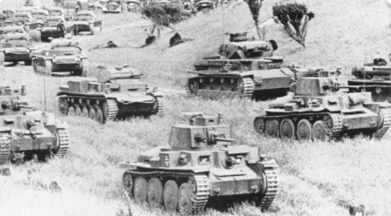
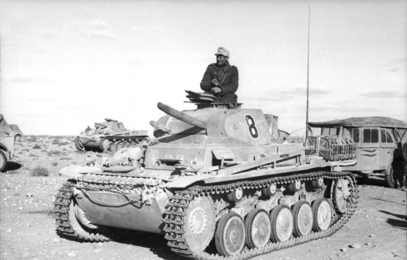
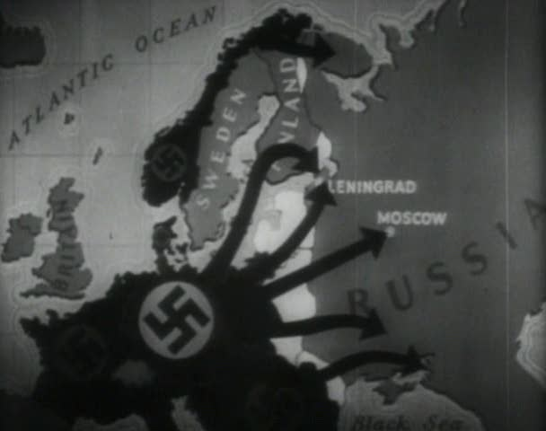
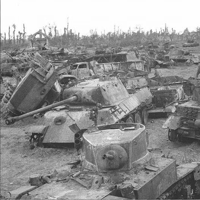
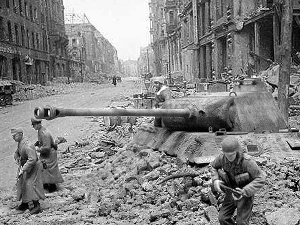
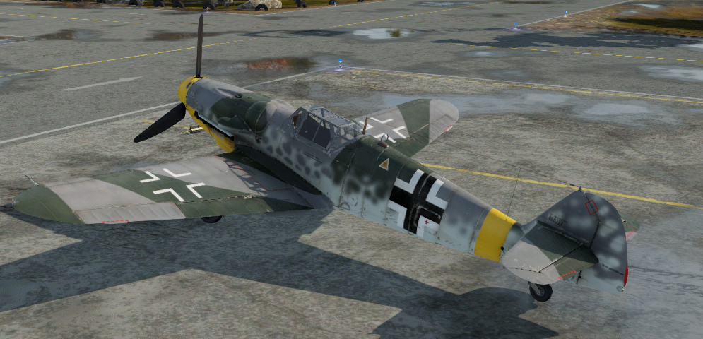
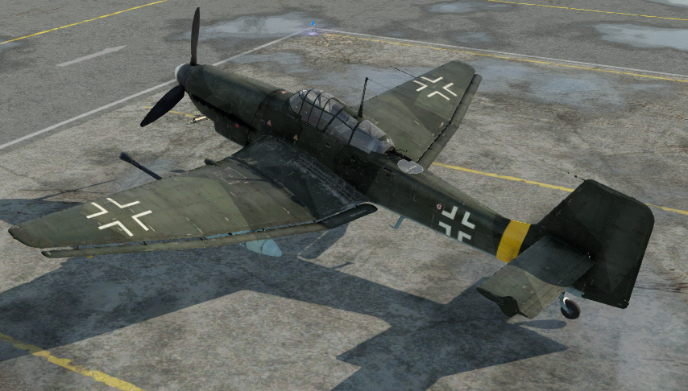
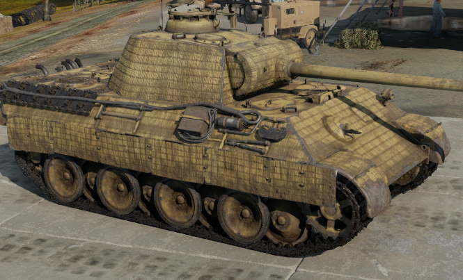
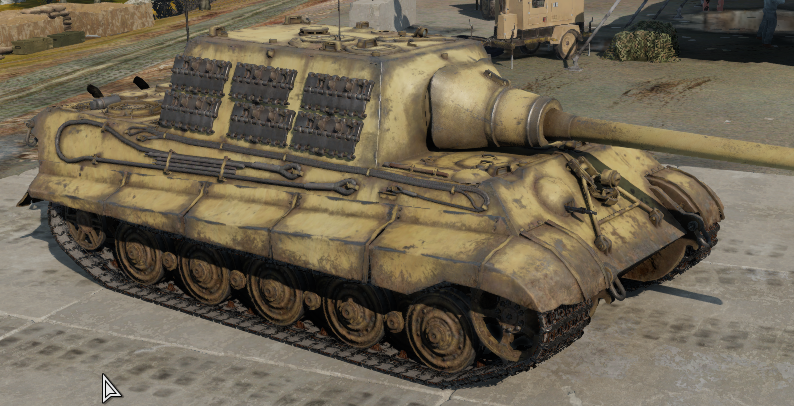
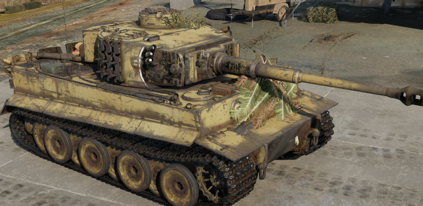

Osa
Aliance
Jako Osa Berlín–Řím, později Osa Berlín–Řím–Tokio, zkráceně Fašistická osa nebo jen Osa, se označovalo vojensko-politické uskupení nacistického Německa, Itálie a následně Japonska. Toto spojenectví bylo ustanoveno německo-italskou smlouvou z října 1936, která určovala německé a italské sféry vlivu v Evropě. Na tuto základní smlouvu navázal tzv. Ocelový pakt z května 1939, ve kterém se oba spojenci dohodli na společném postupu v případě války v Evropě a na s tím související ekonomické a vojenské výpomoci. Ještě v roce 1936 se k Ose přidalo Japonsko, které s Německem uzavřelo Pakt proti Kominterně (tj. spojenectví namířené proti Komunistické internacionále a potažmo proti Sovětskému svazu). Dne 27. září 1940 byl v Berlíně v rámci Osy uzavřen Pakt tří, který potvrzoval spojenectví fašistického režimu v Itálii, nacistického v Německu a militaristického v Japonsku. K Paktu tří se následně připojily německé satelity bojující na straně Osy.
Francie a Polsko
Polsko
Německá invaze začala 1. září 1939, týden po podpisu Paktu Molotov–Ribbentrop mezi Německem a Sovětským svazem a den poté, co pakt schválil Nejvyšší sovět Sovětského svazu. SSSR napadl Polsko 17. září. Kampaň skončila 6. října; Nacistické Německo, Slovenský stát a Sovětský svaz během ní společně v jediném měsíci zlikvidovaly Polsko, které bylo rozděleno a anexováno Německem a Sovětským svazem v souladu s Německo-sovětskou smlouvou o přátelství, spolupráci a vymezení demarkační linie. Západní spojenci, kteří v reakci na německou agresi vyhlásili Německu válku, nebyli ochotni ani schopni Polsku významněji pomoci a nedokázali ani využít faktu, že většina německých jednotek byla soustředěna v Polsku a na polských hranicích. Výsledkem bylo rozdělení polského území mezi Německo, Sovětský svaz, Litvu a Slovenský stát.
Německé síly napadly Polsko ze severu, jihu a západu ráno po incidentu v Gliwicích. Slovenské síly postupovaly po boku německých ze severu Slovenska. Jak Wehrmacht postupoval, také polské síly ustupovaly ze svých předních operačních základen poblíž německo-polské hranice k zavedenějším obranným liniím na východě. Po polské porážce v polovině září po bitvě na Bzuře získali Němci nespornou výhodu. Polské síly se poté stáhly na jihovýchod, kde se připravovaly na dlouhou obranu rumunského předmostí a očekávaly očekávanou podporu a úlevu od Francie a Spojeného království. Tyto dvě země uzavřely smlouvy s Polskem a 3. září vyhlásily Německu válku; nakonec byla jejich podpora Polsku velmi omezená, nicméně Francie zaútočila na malou část Německa během saarské ofenzívy.
Francie
Němci napadli Belgii, Lucembursko a Nizozemsko 10. května, Itálie vstoupila do války 10. června 1940 a německé síly spojence porazily 25. června.
Během Mainsteinova plánu (Fall Gelb) německé obrněné jednotky překvapivě prošly přes Ardeny a poté údolím řeky Somme, odřízly a obklíčily spojenecké jednotky, které postupovaly do Belgie. Britské, belgické a francouzské síly byly německými armádami zatlačeny zpět k moři a Britové evakuovali své expediční síly (BEF), francouzské a belgické jednotky z Dunkirku během operace Dynamo.
Německé síly 5. června zahájily operaci Fall Rot. Šedesát zbývajících francouzských a dvě britské divize ve Francii zaujmuly postavení na řekách Somme a Aisne, ale byly poraženy kombinací německé vzdušné převahy a mobilních obrněných sil. Německé tanky obešly Maginotovu linii a postupovaly hluboko do francouzského území, přičemž 14. června okupovaly bez odporu Paříž. Po útěku francouzské vlády a pádu francouzské armády se němečtí velitelé 18. června setkali s francouzskými úředníky, aby vyjednali zastavení nepřátelských akcí.
Afrika
Afrika Korps

Deutsches Afrikakorps (Německý africký sbor), byl expediční sbor německého Wehrmachtu během druhé světové války. Afrikakorps operoval mezi lety 1941 a 1943 v severní Africe. Jeho prvním velitelem byl generál, pozdější velitel Panzerarmee Afrika a polní maršál, Erwin Rommel. Původní název byl Sperrverband Afrika, ale 16. února 1941 byly přejmenovány na Deutsches Afrikakorps.
Africké tažení začalo útokem italských jednotek z Libye na britskou armádu v Egyptě. Britové útok odrazili a podnikli protiútok do Libye. Aby zabránilo porážce Italů, provedlo Německo operaci Slunečnice, vylodění jednotek Afrikakorps v Libyi. Německé jednotky brzy převzaly hlavní roli v boji proti Britům. Zatímco pro Brity nepředstavovalo zajištění přísunu potravin a munice nijak závažný problém, Afrikakorps se musel spoléhat na zásobování přes Středozemní moře. Tyto dodávky se často stávaly terčem útoků britského letectva a námořnictva. Přítomnost britských jednotek na Gibraltaru a na Maltě činila zásobování velmi nesnadným.
Afrikakorps zpočátku bojoval v podřízenosti italské armády v severní Africe, ale již 15. srpna 1941 je zřízena jako vyšší velitelský stupeň Panzergruppe Afrika , která se 30. ledna 1942 mění na Panzerarmee Afrika, jejichž veliteli se postupně stává první velitel Afrikakorpsu E. Rommel. Nejdůležitější bitvy Afrikakorpsu se odehrály u Tobrúku a El Alamejnu. Po urputných bojích byly síly Osy zahnány do Tuniska. Po vylodění Spojenců v Maroku a Alžírsku byl Afrikakorps sevřen dvěma frontami, takže se jeho pozice stala neudržitelnou. Jelikož jednotky nebyly včas staženy do Itálie, padlo 120 tisíc německých vojáků do zajetí. Afrikakorps kapituloval 13. května 1943.
Východní fronta
Operace Barbarossa
Operace Barbarossa byl krycí název pro invazi vojsk nacistického Německa do Sovětského svazu, kterou byla otevřena východní fronta druhé světové války. Následující boje na velké části evropského území SSSR jsou známy pod pojmem Velká vlastenecká válka.
 Operace Barbarossa byla zahájena 22. června 1941. Skončila již v prosinci 1941 neúspěchem vyčerpaných německých vojsk v bitvě před Moskvou, která v krutých zimních podmínkách a za sílícího náporu Rudé armády nedokázala pokračovat ve svém postupu a byla donucena přejít do obrany svých pozic. Tím také prakticky neuspěla německá blesková válka na území SSSR. Dlouhodobá válka i na jiných frontách vedla nakonec k totální porážce Německé říše a jejích spojenců. Po roce 1941 se totiž začala prosazovat strategická, surovinová a průmyslová převaha Spojenců, hlavně SSSR, Spojených států amerických a Spojeného království. Také rostoucí bojové zkušenosti a schopnosti Rudé armády vedly k tomu, že nacistické Německo a jeho satelitní státy nedokázaly vzdorovat a nakonec ani zabránit obsazení německého území.
V průběhu operace Barbarossa a v dalším průběhu války zajaly německé jednotky 3,5 milionu sovětských válečných zajatců, kterým se nedostalo ochrany podle Ženevských konvencí. Většina z nich v zajetí zemřela na nelidské zacházení a také hladem. Nacistické vedení Německa nechalo záměrně vyhladovět ruské válečné zajatce k smrti. Také blokáda Leningradu, trvající od 8. září 1941 do 27. ledna 1944, byla namířena nejen na dobytí a zničení města, ale i na vyhladovění jeho obyvatelstva.
Bitva u Kursku
Fronta se na několik měsíců stabilizovala a obě strany sbíraly síly k rozhodující bitvě. Mezi Orlem a Bělgorodem vznikl výběžek fronty zasahující asi 80 km do německých pozic. Tam se německé velení rozhodlo zasadit svůj hlavní úder letní ofenzívy roku 1943. Posbíralo nejlepší jednotky a techniku, které Wehrmachtu na východní frontě zůstaly. Při tom dával Hitler důraz na posily novými tanky Panther a stíhači tanků Fedinand. Štáb vrchního velení Sovětského svazu však měl o těchto přípravách podrobné informace. Sovětští generálové začali zvažovat všechny eventuality a pak Stalinovi doporučili, aby jim dovolil připravit v Kurském oblouku pro německé divize obrovskou past. Ta spočívala v silné rozvrstvené obraně a také obrovských zálohách, které měly následně po odražení německé ofenzívy přejít do protiútoku. Hitler se svými generály velmi podcenil tyto sovětské kroky a rozhodl o začátku útoku.
5. července 1943 zaútočilo na sovětskou obranu několik set tisíc nejlepších vojáků Třetí říše v operaci Citadela, která vešla do dějin jako bitva u Kurska a vyvrcholila v ohromné tankové bitvě u Prochorovky, největší tankové bitvě v dějinách. Sovětská armáda vybudovala v kurském výběžku mohutná obranná postavení, o která se německý útok roztříštil. Byl to definitivní krach německé bleskové války, který předurčoval konec nacistické převahy na východě.
Berlínský směr a poslední boje v Evropě
Začátkem dubna 1945 začal útok na Berlín. Němci celý úsek sovětského postupu opevnili a byli ho ochotni rozhodně bránit. Nasadili i jednotky Volkssturmu. Navíc na vlastním území začali obzvlášť intenzivně aplikovat taktiku spálené země. Žukovův 1. běloruský front i kvůli zbytku skupiny armád Visla postupoval s obtížemi. Rychleji zatím postupoval Koněvův 1. ukrajinský front. 19. dubna Sověti prorazili přes německou linii na Seelowských výšinách a v den Hitlerových 56. narozenin začali ostřelovat Berlín. O deset dní později spáchal Hitler 30. dubna 1945 sebevraždu. V ruinách hlavního města Třetí říše a na přístupech k němu padlo asi 90 až 150 000 sovětských vojáků.
7. května 1945 podepsali Němci bezpodmínečnou kapitulaci . Jejich vojska na východě pokračovala v bojích a ústupu na západ, aby se mohla vzdát Britům nebo Američanům. Událo se tak 8. května 1945 na předměstí Berlína Karlshorst. Za sovětskou stranu podepsal kapitulaci Georgij Žukov, ale přítomen byl i Andrej Vyšinskij. Za Němce podepsali kapitulaci Hans-Georg von Friedeburg, Hans-Jürgen Stumpff a Wilhelm Keitel, za Brity Arthur William Tedder, za Američany Carl Spaatz a za Francouze Jean de Lattre de Tassigny. Druhá světová válka v Evropě tak oficiálně skončila. Množství německých jednotek se však nadále pokoušelo probít na západ. Proto se například v Česku bojovalo ještě 11. května. 24. června 1945 se na Rudém náměstí v Moskvě konala slavnostní přehlídka vítězných vojsk Rudé armády.
Den D
Bitva o Cherbourg
Bitva o Cherbourg byla součástí bitvy o Normandii během druhé světové války. Byla vybojována okamžitě po úspěšném spojeneckém vylodění 6. června 1944. Jednotky Spojených států izolovaly a poté během tří týdnů těžkých bojů dobyly opevněný přístav považovaný za životně důležitý pro tažení západní Evropou. Ale byl tak poničený že nešel měsíce použít.
Bitva o Caen
Caen bylo jedním z nejdůležitějších cílů počáteční fáze Operace Overlord. Město bylo největším sídlem v oblasti vylodění, leželo na řece Orne a Caenském kanálu, poblíž něj se nacházelo letiště a bylo velkým silničním a železničním uzlem. Krajina kolem něj je navíc velmi rovinatá, na rozdíl od krajiny „živých plotů“ označované jako bocage. Z tohoto důvodu Spojenci naplánovali jeho obsazení již jako součást operace Neptune, jak bylo označováno vylodění na normandských plážích Dne D. Avšak britská 3. pěší divize, která se úspěšně vylodila na pláži Sword, již nedokázala v den vylodění město obsadit. Na půl cesty mezi pláží a městem byla zastavena protiútoky německé 21. tankové divize.
Po operaci Goodwood bitva o Caen de facto skončila. Stále však bylo potřeba porazit Němce, jenž se drželi na jih od města. Boje trvaly až do začátku srpna, kdy se nakonec Spojencům podařilo prolomit německé linie. V bojích o Caen padlo celkem více než 101 000 mužů. Bitva o město byla jedna z nejtvrdších a nejdelších bitev spojenců na západní frontě. Samotné Caen bylo z více než poloviny zničeno. Vázání německých tankových divizí však nakonec přispělo k šťastnému průlomu z Normandie v americkém sektoru. Cesta do Francie a na Paříž byla otevřena.
Operace Tractable
Počáteční bombardování oslabilo německou obranu a bylo následováno 4. kanadskou obrněnou divizí na západní straně, zatímco 3. kanadská pěší divize zaútočila na východní křídlo. Jejich postup měl být chráněn velkou clonou způsobenou střelbou kanadského dělostřelectva. Následně z téhož místa měly všechny tři formace postupovat směrem k Trunu východně od Falaise.
 Vzhledem k po sobě jdoucím útokům z počátku srpna nejsou kanadské ztráty během Operace Tractable známé,
ale
ztráty během Totalize a Tractable se odhadují na 5 500 mužů. Německé ztráty během Operace Tractable jsou
také nejisté. Německá 7. armáda byla silně vyčerpána, ztráty se odhadují na 50 000–200 000 mužů, více
než 200 tanků.
Vzhledem k po sobě jdoucím útokům z počátku srpna nejsou kanadské ztráty během Operace Tractable známé,
ale
ztráty během Totalize a Tractable se odhadují na 5 500 mužů. Německé ztráty během Operace Tractable jsou
také nejisté. Německá 7. armáda byla silně vyčerpána, ztráty se odhadují na 50 000–200 000 mužů, více
než 200 tanků.
Letectvo
Bf-109 G-6

Bf-109 G-6 byl jednomotorový stíhač který letěl rychlostí až 616km/h
Historie
Messerschmitt Bf 109 byl jednomístný jednoplošný stíhací letoun používaný Luftwaffe před druhou světovou válkou a během ní. Byl používán jako stíhací, záchytný, výškový, stíhací bombardovací a průzkumný letoun. Bf 109 G-6 "Gustav" byl nejmasověji vyráběnou variantou řady Gustav. Do výroby vstoupil koncem podzimu 1942 a zpočátku byl koncipován jako univerzální platforma, kterou bylo možné rychle přestavět na různé role podle potřeby v polních podmínkách. Celkem bylo vyrobeno 700 letounů. G-6 byl také prvním strojem, který byl vybaven 30mm kanónem MK 108, který měl 60 speciálně navržených zápalných nábojů. Ke zničení jednomístné stíhačky obvykle stačil jediný zásah, většina bombardérů nepotřebovala více než 4 nebo 5 zásahů.
Bf-110 G-4

Bf-110 G-4 byl dvoumotorový tříposádkový bitevník který letěl rychlostí až 552km/h
Historie
Bf 110G byla původně konstruována jako stíhací bombardér, ale vzrůstající nálety na Německo spojeneckými bombardéry ji předurčily do role noční stíhačky . Čas od času byly noční stíhací Bf 110G použity i k denním operacím. Nejprve byly zapojeny jako doprovod křižníků Scharnhorst a Gneisenau u holandského pobřeží a Helgolandské zátoky. V létě 1943 zaútočili na americké formace denních bombardérů, když letěly bez stíhacího doprovodu. Během těchto akcí skupiny Bf 110G utrpěly těžké ztráty zřejmě i kvůli nedostatečnému výcviku jejich pilotů k denním akcím, které vyžadovaly bezprostřední přiblížení se k cíli, kde na ně čekala účinná obranná palba z bombardérů. Pro stíhačky Republic P-47 Thunderbolt, které doprovázely spojenecké bombardéry B-17 Flying Fortress a B-24 Liberator nad Berlínem nebyly Bf 110 komplikovaným soupeřem.
Ju 87 Stuka

Junkers Ju 87D byl dvoumístný, jednomotorový samonosný dolnoplošník který letěl rychlostí až 348km/h
Historie
Roku 1933 vypsalo RLM (říšské ministerstvo letectví) soutěž na výrobu střemhlavého bombardéru. Soutěže se zúčastnily firmy: Arado, Blohm & Voss, Heinkel a Junkers. Projekt firmy Junkers nakonec získal státní zakázku. Předchůdcem Ju 87 bylo podobně koncipované letadlo Junkers K-47. První prototyp Ju 87V1 vzlétl 17. září 1935 na továrním letišti v Dessau. Stroj zkonstruoval Herman Polman. Už tehdy letadlo získalo svoje charakteristické rysy jako celokovová konstrukce centroplánu, či křídla do tvaru „W“ Prototyp byl poháněný motorem Rolls-Royce Kestrel V s maximálním výkonem 525 k. Pozdější prototypy se lišily motorem Junkers Jumo 210A s vyšším výkonem, jednoduchou směrovkou a průzorem v podlaze pro jednodušší bombardování. Výzbroj se skládala kromě nesených pum i z dvou kulometů MG 17 v křídlech a jednoho MG 15 ovládaného střelcem, pro krytí zadní polosféry. Prototypy měly nosnost jen do 500 kg. Ve své době byl stroj celkově dobrý, poměrně kvalitní a spolehlivý. Zkombinoval dobré letové vlastnosti, na svou třídu dostatečnou manévrovatelnost, dobrý výhled z kabiny a přesnost zásahů při bombardování, která se pohybovala okolo 30 m.
Těžká technika
Panther A

Panther A byl pětiposádkový střední tank který jel rychlostí až 55km/h
Historie
V polovině roku 1943 sloužilo v německých jednotkách asi 340 Pantherů. Ty byly poprvé nasazeny v bitvě u Kurska. Mnoho strojů odpadlo pro technické obtíže. Společně s T-34 a po doladění některých obtíži se Panther stal jedním z nejlepších strojů války, ovšem německý průmysl jich nebyl schopen vyprodukovat dostatečné množství. Od druhé poloviny roku 1943 se Panthery začaly skutečně osvědčovat. Například divize SS Das Reich v září 1943 během dvou dnů zničila za pomoci Pantherů 40 sovětských T-34 a KV-1. Tankový pluk Bäke v lednu 1944 v pětidenním boji v “kapse Balabonovka” zničil 267 tanků, při ztrátě jednoho tanku Tiger a 4 Pantherů. Na západní frontě byla nadřazenost Pantherů ještě výraznější. Po válce je určitou dobu používalo Československo, Maďarsko i Francie.
JagTiger

JagTiger byl šestiposádkový stíhač tanků který jel rychlostí až 42km/h
Historie
Jagdtiger představoval vážnou hrozbu i pro ty nejtěžší nepřátelské tanky, jež mohl účinně ostřelovat na vzdálenost maximálně tři a půl kilometr. Navzdory tomu je projekt obecně hodnocen jako chybný a neúspěšný. Jeho výroba byla extrémně drahá a pomalá, spotřeba paliva příliš vysoká. Stroj trpěl celou řadou závad vyplývajících z uspěchaného nasazení na frontu a přílišného namáhání hnacích systémů. Jeho kanón používal dělené střelivo, což v boji vedlo k nižší praktické rychlosti střelby. Stroj byl příliš nemotorný a stejně jako Ferdinand se nedokázal vypořádat s útokem většího množství nepřátel, kteří se dostali do jeho těsné blízkosti a obvykle jej bez potíží vymanévrovali. Stejně tak byl zranitelný útoky nepřátelského letectva. Jagdtiger byl oproti Ferdinandovi vybaven kulometem v přední části trupu a to mu poskytovalo ochranu před nepřátelskou pěchotou při čelním útoku.
Tiger H1

Tiger H1 byl pětiposádkový těžký tank který jel rychlostí až 45km/h
Historie
Těžký tank Tiger měl v některých ohledech závažné nedostatky. Byl to těžkopádný obr, jeho motor a převodovka nebyly dimenzovány pro pohon tak těžkého vozidla. Trpěl velmi často mechanickými poruchami, měl značnou spotřebu paliva a omezený dojezd. Rychlost motorického otáčení věže byla příliš malá. Střelba na pohyblivé cíle byla obtížná, kanón postrádal stabilizátor, takže tank nemohl vést přesnou střelbu za jízdy. Proti tomuto výčtu vad stojí silné pancéřování a výkonný kanón, což byly dva důležité faktory, které z tanku Tiger udělaly obávanou zbraň na bojištích druhé světové války.